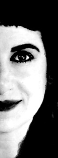

Philosophy
There is no one pill, magic cream or miraculous potion that will give you a perfect complexion. No skin should be arbitrarily categorized and addressed with one set of rules. Each person is unique and affected by environment, genetics, hormones, stress, and everyday habits. It is essential to determine the source of imperfections so that they can be effectively corrected with methods that work. Treatment should be personally tailored and attentive to any detail that may have an impact on the skin.

Method
Fabulous skin can be achieved by addressing issues such as acne, sun damage, broken capillaries, scarring, hyperpigmentation, and wrinkles in a comprehensive manner. The initial consultation serves to identify what problems exist within the skin and the reasons for imperfection. Family history, health issues, habits, and current practices, are all addressed. Emphasis is placed on diet as well as current product usage such as skin care, hair care, and detergent. What you eat and drink has a major impact on your skin and it is imperative to learn what is beneficial and what is harmful.
Clients must be dedicated to adhering to a customized skin care regimen that consists of clinical strength professional products to provide maximum effect without irritating the skin. This is coupled with in-office services such as oxygen facials, glycolic peels, photo facials or combinations that are performed according to each client's specific needs. Arresting acne, lessening the imperfection of the aging process, and repairing environmental damage is possible with the commitment of both the client and a personal aesthetician. .